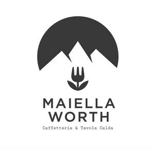

Trade Mark Journal No.2025/034 22 August 2025
UK00004248971 13 August 2025 (43)

- Class 43
- Cafe services; Café services; Restaurant services; Self-service restaurant services; Bistro services; Take-away restaurant services; Catering services for the provision of food and drink; Bar and restaurant services; Restaurant and bar services; Coffee bar services; Coffee shop services; Office catering services for the provision of coffee; Catering services for the provision of food; Brasserie services; Take-away food services; Providing food and drink catering services for exhibition facilities; Take-out restaurant services; Catering services; Takeaway food services; Ramen restaurant services; Snack-bar services; Consultancy services in the field of food and drink catering; Carvery restaurant services; Mobile restaurant services; Providing food and drink catering services for convention facilities; Bar services; Providing restaurant services; Hotel catering services; Take-away food and drink services; Takeaway food and drink services; Takeaway services; Sushi restaurant services; Restaurant services for the provision of fast food; Canteen services; Club services for the provision of food and drink; Fast-food restaurant services; Services for the provision of food and drink; Catering services for company cafeterias; Providing food and drink catering services for fair and exhibition facilities; Snack bar services; Mobile catering services; Cafeteria services; Wine bar services; Restaurant information services; Business catering services; Washoku restaurant services; Hotel restaurant services; Hospitality services [food and drink]; Self-service cafeteria services; Restaurant services incorporating licensed bar facilities; Spanish restaurant services; Coffee supply services for offices [provision of beverages]; Japanese restaurant services; Tempura restaurant services; Charitable services, namely providing food and drink catering; Services for providing food and drink; Restaurant reservation services; Catering services for hospitals; Salad bars [restaurant services]; Beer bar services; Outside catering services; Night club services [provision of food]; Hookah bar services; Catering services for educational establishments; Catering services for schools; Bartending services; Catering services for hospitality suites; Hotel services; Services for the preparation of food and drink; Food and drink preparation services; Services for providing food; Take-away fast food services; Catering services for providing Spanish cuisine; Juice bar services; Providing drink services; Services for providing drink; Catering services for providing Japanese cuisine; Catering services for providing European-style cuisine; Contract food services; Banqueting services; Cocktail lounge services; Lounge services (Cocktail -); Consultancy services relating to food; Catering for the provision of food and beverages; Catering for the provision of food and drink; Sommelier services; Food preparation services; Hookah lounge services; Bar information services; Teahouse services; Wine tasting services (provision of beverages); Consultancy services relating to hotel facilities; Creche services provided in shopping locations; Creche services; Information, advice and reservation services for the provision of food and drink; Tea room services.
Maiella Limited